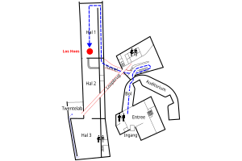
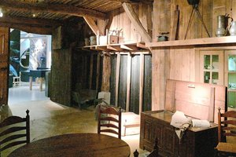
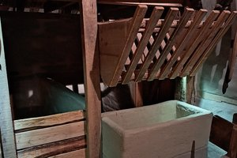
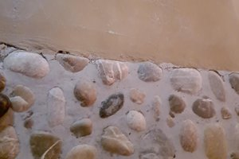
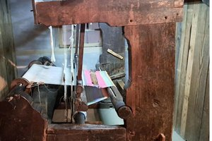
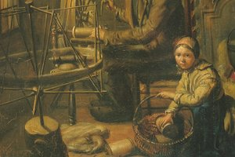
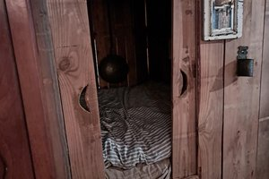
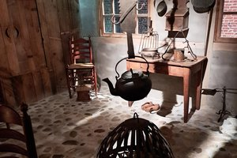
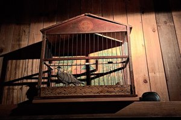

Los Hoes
Hoe boerenfamilies leefden in een Twents Los Hoes.
Stops in deze tour
-

Stop 1 Route naar het los hoes -
 Stop 2 Welkom in het los hoes
Stop 2 Welkom in het los hoes -
 Stop 3 Naam van het Los hoes
Stop 3 Naam van het Los hoes -
 Stop 4 Gevelteken
Stop 4 Gevelteken -
 Stop 5 Vlas kapelletje
Stop 5 Vlas kapelletje -
 Stop 6 Werktuigen van vlas naar garen
Stop 6 Werktuigen van vlas naar garen -

Stop 7 Koeien en potstal -

Stop 8 Varkens, paarden en kippen -

Stop 9 Vloer -

Stop 10 Weefgetouw -

Stop 11 Werken in weefkamertje -

Stop 12 Slapen, wassen en toilet -

Stop 13 Eten en drinken -

Stop 14 Tortelduif